The gallery
Photography, selected frames.
Kevin shot actively in New York City — fashion weeks, brand shoots, portraits, and grad sessions — and less since moving to Champaign for UIUC. A selection of the work, 2023–2025.
1
Fashion
Commissioned and collaborative fashion work — designers, brands, and collectives across New York.

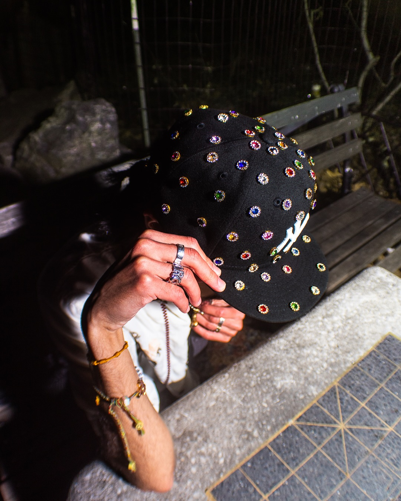

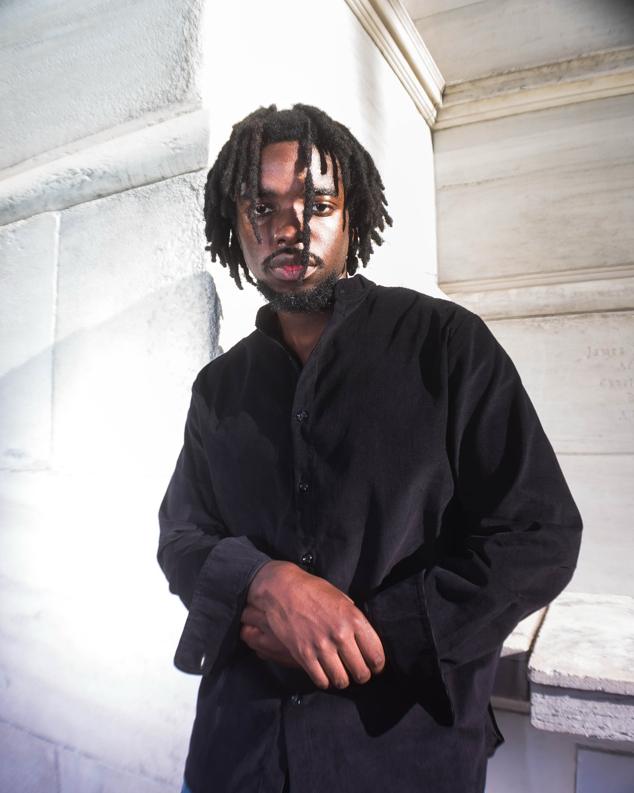
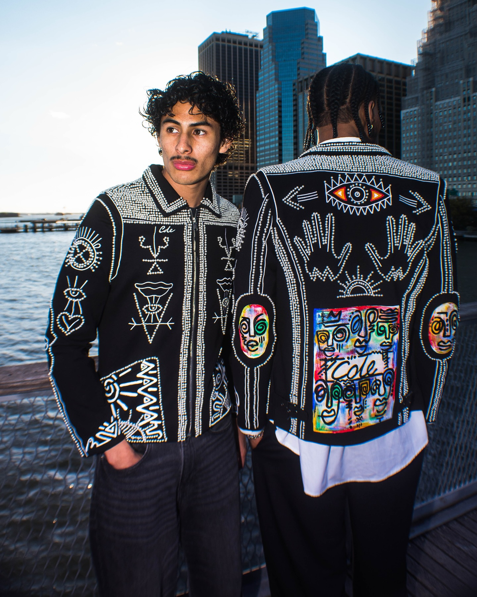

2
Portraits
Portraits from fashion weeks, grad season, and studio sessions.
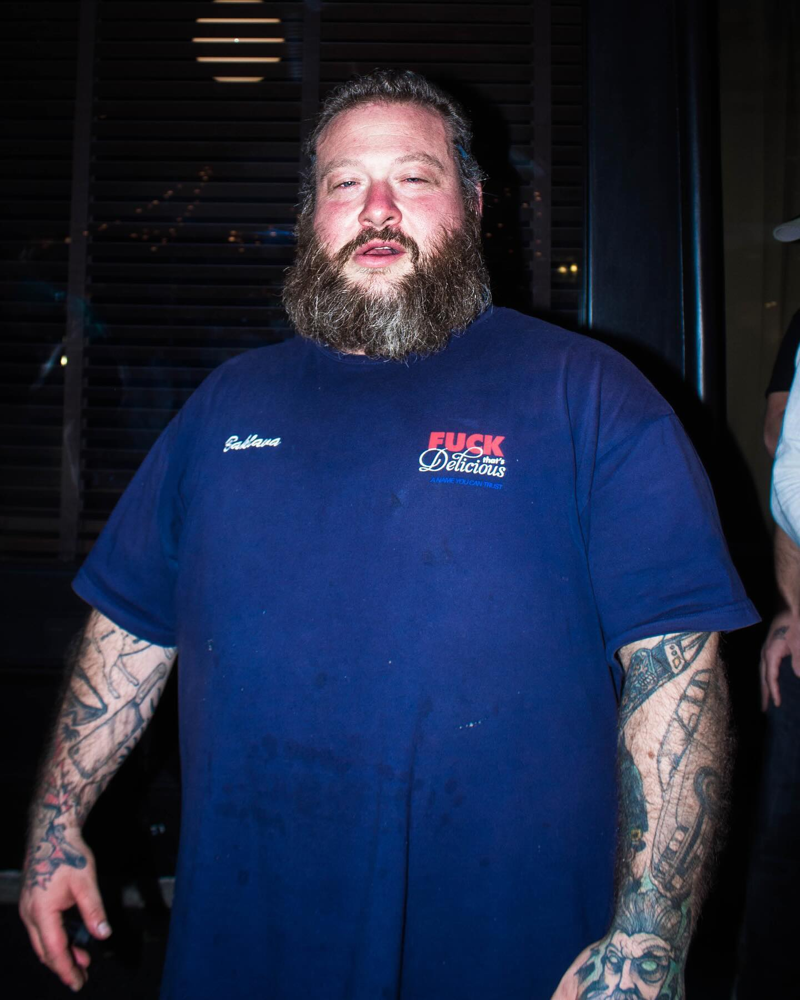
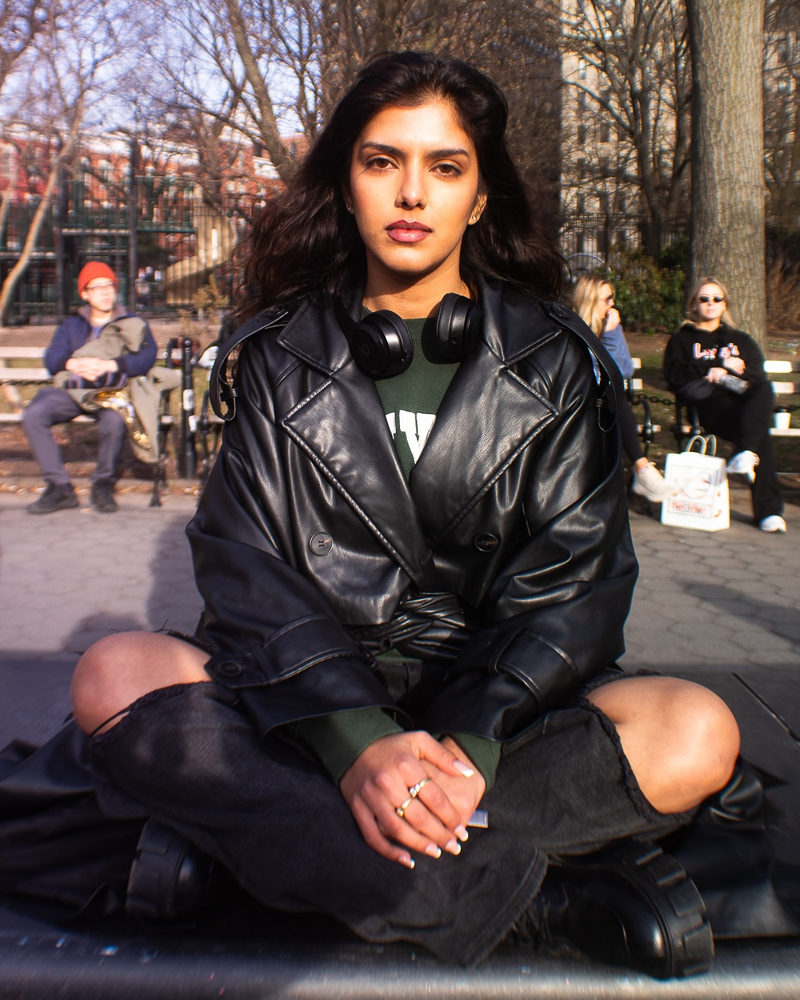
3
Editorial
Styled shoots with a narrative — forests, boardrooms, and alter egos.
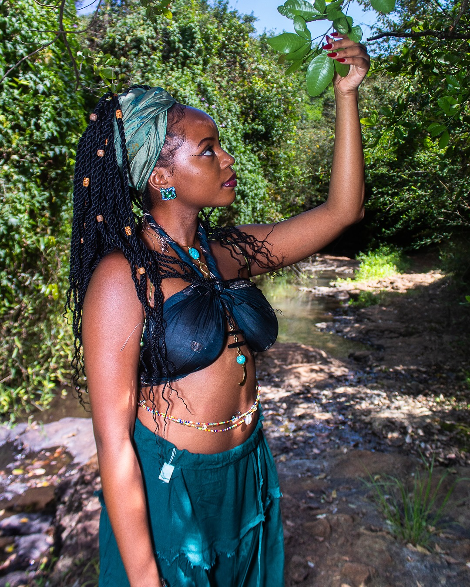
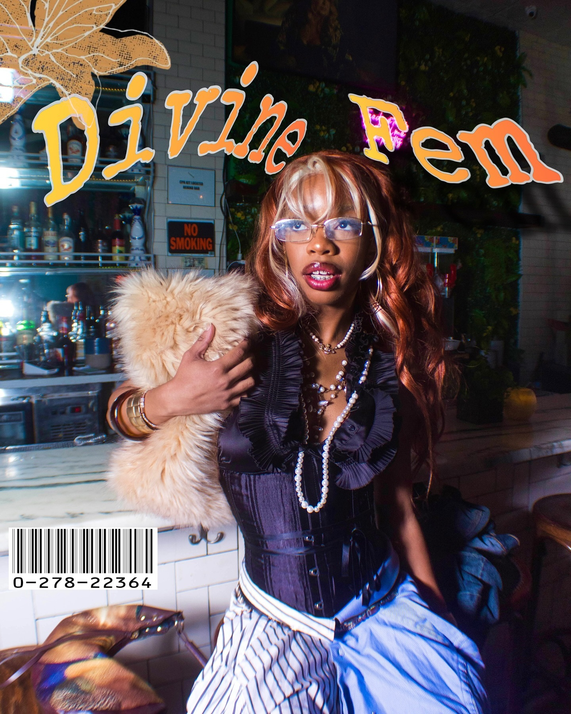
4
Events
On the ground at fashion week and release parties.
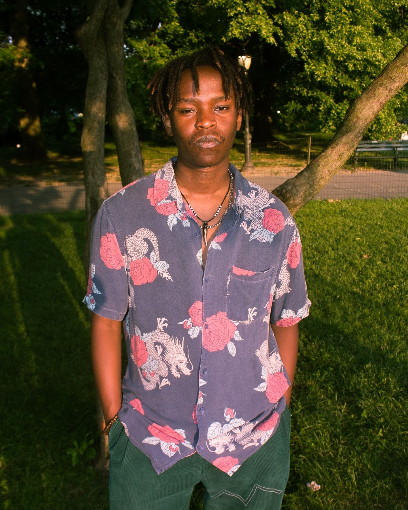
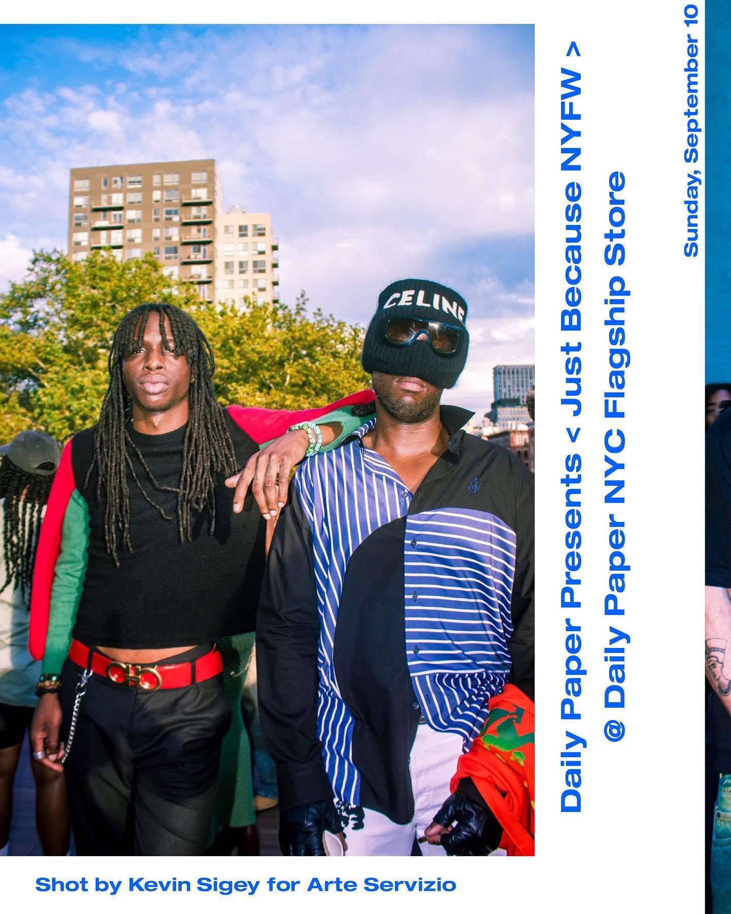
5
Beach
Summer light, from Far Rockaway to Harlem rooftops.
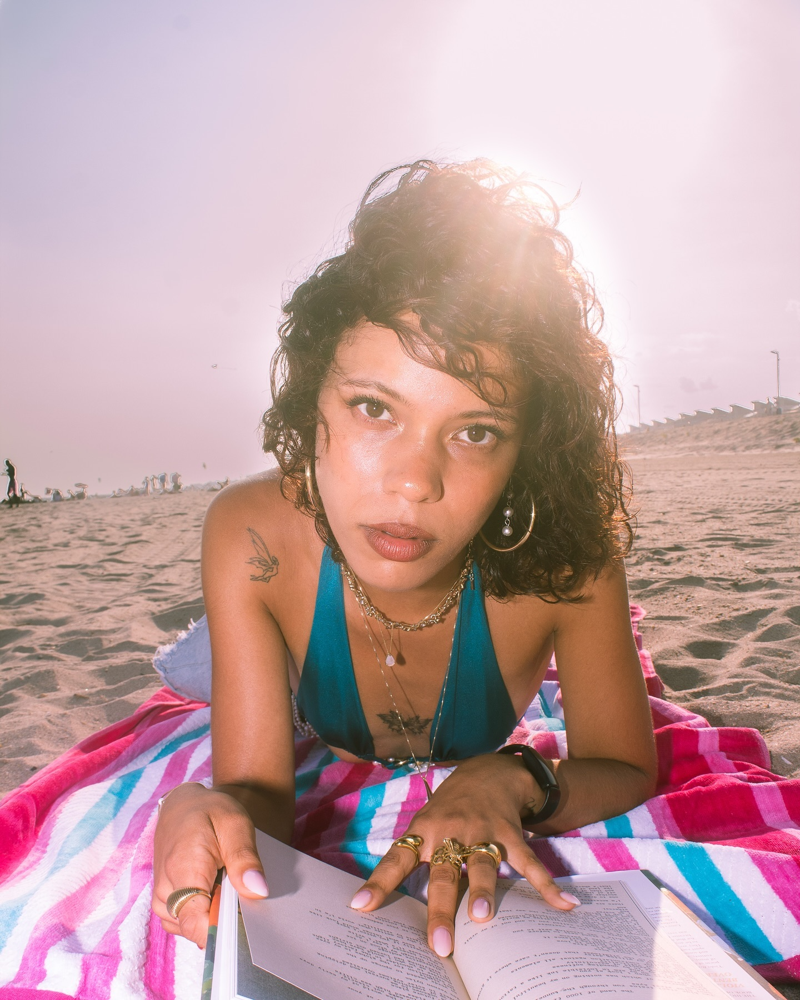

6
City
San Francisco, on foot.
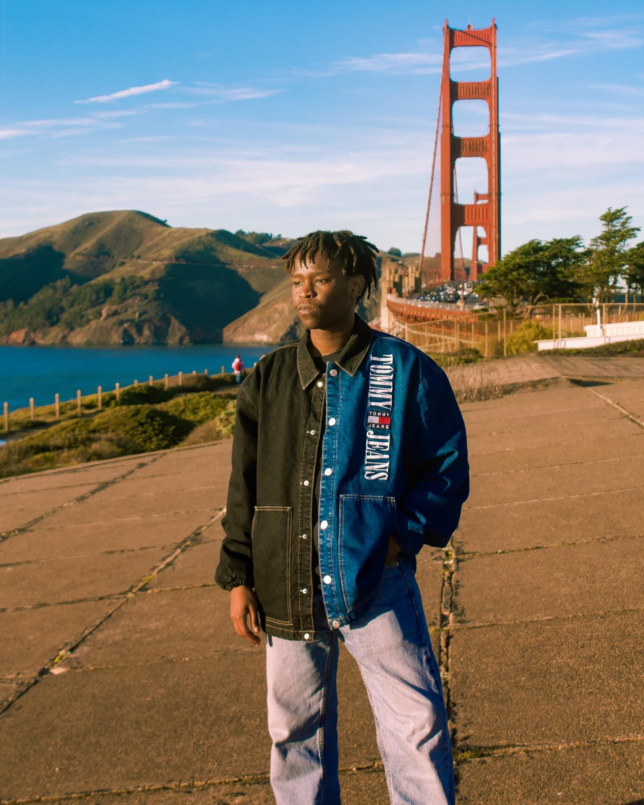